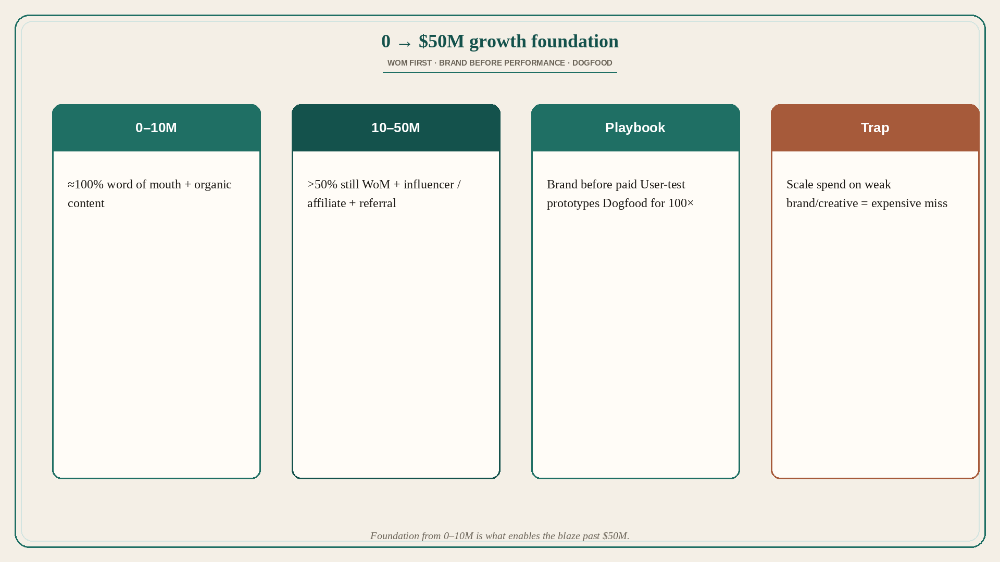

0→$50M: word-of-mouth foundation, brand before performance, dogfood
Source: Grant Lee (@thisisgrantlee)
original post
What it claims
Grant Lee (Gamma) shares tactics from growing zero to $50M ARR in under two years, profitably — learnings he says cost over $5M, never shared publicly before. Four pillars: influencer marketing, performance vs brand, user testing, dogfooding. 0–10M was nearly 100% word of mouth and organic; 10–50M still >50% WoM, with influencer, affiliate, and referral filling the rest — the 0–10M foundation enabled the later blaze. Influencer 101: ~90% of reach comes from <10% of content that goes viral — go broad, spend enough to find that 10%, discover hooks/visuals/formats per platform, replicate 100×. Common mistakes: too-small budget, overly selective creators/messaging, giving up early. Start $10–20k/month for 6 months minimum; list exhaustive creator personas; base + viral bonus; on TikTok prefer new accounts so creators are unburdened by brand; test TikTok/IG/X/LinkedIn; track creators and hooks not just channels; add “How did you hear about us” and separate leads from views; once you have 20–30 winning formats, hire top creators as consultants to train the roster; never write scripts. Brand before performance: weak brand/creative makes scaled spend expensive — they paid for a costly rebrand because skipping it would have cost more; 10× the creatives you plan to test; measure CAC payback, conversion, LTV, retention; when a use case resonates, build a funnel with symmetric messaging (ad value prop must match landing). Prototype user tests before ship (Gamma founding team = early Optimizely; experimentation in DNA): voicepanel/usertesting with people who make slide decks for work and have no skin in the game; minimal instructions; think-aloud; voice+screen amplifies pain 10×; test landing, onboarding, features, moonshots; ship only after hours of proof ordinary people find it easy and useful. Dogfood hard: build 100× better or build something else. Parallel 6-month dogfood of virtual-office vs reimagined PowerPoint made Gamma the clear winner — not by metrics alone, but because virtual office could never beat IRL while a reimagined deck tool could be 100×.
Why it matters for a PO
A PO chasing paid acquisition before the product earns unprompted shares is skipping the foundation Lee names. Brand and creative quality before performance spend, think-aloud prototype tests before ship, and dogfooding as a 100× filter are product decisions — not “growth hacks” bolted on after the roadmap. Symmetric funnel messaging is a PO ownership problem when ads and product promise diverge.
3 takeaways
- 0–10M nearly all WoM/organic; that foundation enabled later channel mix past $50M.
- Influencer: go broad, budget enough ($10–20k/mo, 6 months), find the viral 10%, never script creators; brand+creatives before scaled performance; symmetric ad→landing messaging.
- Think-aloud prototype tests with no-skin-in-the-game users; dogfood until 100× better is obvious — or kill the idea (Gamma vs virtual office).
Practice this week
Name your current growth mix: % WoM vs paid. If paid is ahead of unsolicited referral, schedule five think-aloud prototype tests this week and one dogfood session on the core loop. Add or fix “how did you hear about us.” Do not add a performance-spend story until one creative/use-case has clear payback language and matching landing copy.